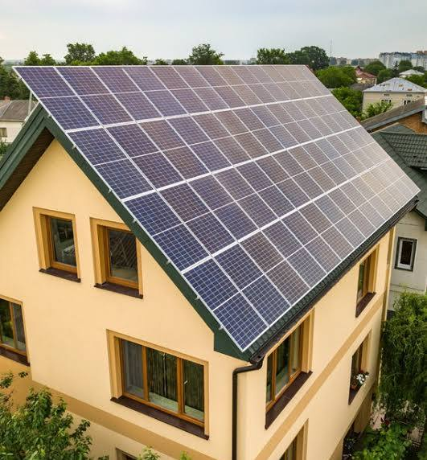

Educação Ambiental
Cuidar do planeta é responsabilidade de todos!
Cuidar do planeta é responsabilidade de todos!

Imagine poder captar a energia que vem diretamente do céu para iluminar sua casa, carregar seu celular e mover indústrias, sem barulho e sem poluição. Isso não é ficção científica, é a energia solar fotovoltaica. Essa tecnologia utiliza painéis, geralmente feitos de silício, para converter a luz do sol diretamente em eletricidade através de um fenômeno físico fascinante chamado efeito fotovoltaico.
Os benefícios vão muito além da economia na conta de luz, que pode chegar a 95%. Adotar o sol como fonte de energia é um gesto de carinho com o nosso planeta. Diferente dos combustíveis fósseis, a energia solar é limpa, renovável e inesgotável. Ela não emite gases de efeito estufa e ajuda a preservar nossos recursos hídricos, já que não depende de grandes barragens para funcionar.
Além disso, a instalação de sistemas solares valoriza os imóveis e gera milhares de empregos "verdes" ao redor do mundo. É uma tecnologia que democratiza o acesso à energia: você se torna o seu próprio produtor. Mesmo em dias nublados, os painéis continuam trabalhando, mostrando que o sol está sempre lá, pronto para nos ajudar a construir um mundo mais equilibrado e consciente para as próximas gerações.